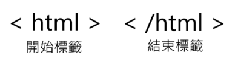
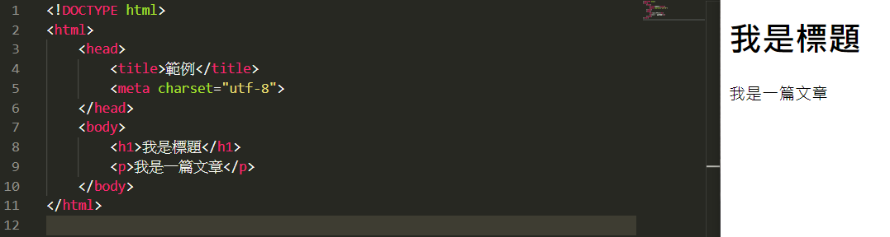
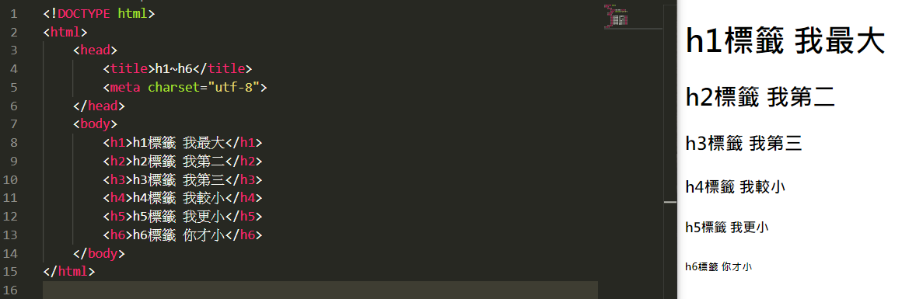
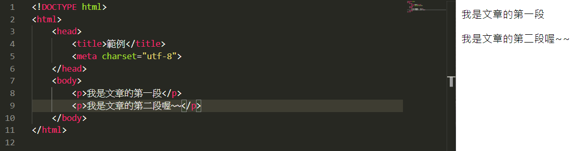
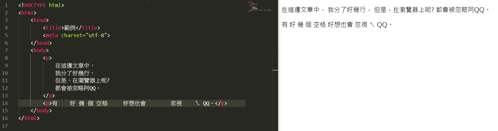
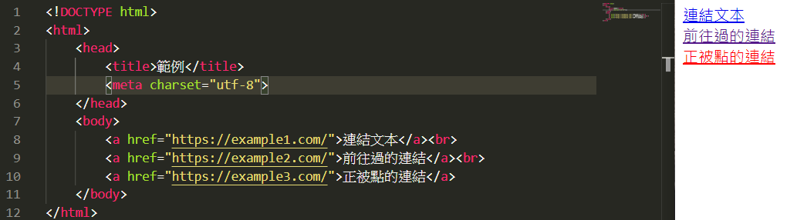
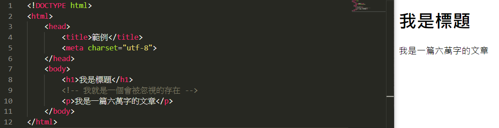

# HTML 基本範例
# HTML 基本常識 && 注意事項
HTML 是一種標籤式的語言，可以在任意貼上或取下
(幾乎) 每段程式碼的都需要被
開始標簽與結束標簽包覆，範例:
如果在編輯的時候，某行出了 Bug (發生錯誤) 的話，瀏覽器會直接忽略該行喔～～
HTML 它可以靠
開始標簽與結束標簽跨行，但不必要的跨行會讓之後的編輯更複雜喔！！在開始與結束標籤內可使用大寫，但 W3C 有規範只能用小寫喔～～
未來程式碼可能會超多超多...，所以，縮排很重要！！
# HTML 文件
所有 HTML 文檔都必須以文檔類型聲明：開頭 <!DOCTYPE html> 。
HTML 文檔本身以開頭
<html>和結尾</html>
定義頭部基本信息：標題，關鍵字，作者等。HTML 文檔的可見部分在
<body>和之間</body>，
表示當前 HTML 的主體，定義最終在瀏覽器窗口顯示的內容。

# <！DOCTYPE> 聲明
該 <!DOCTYPE> 聲明代表文檔類型，並有助於瀏覽器正確顯示網頁。
它只能在頁面頂部（在任何 HTML 標記之前）出現一次。
該
<!DOCTYPE>聲明不區分大小寫。
<!DOCTYPE>HTML5 的聲明為：
<!DOCTYPE html> |
# HTML 標題
HTML 標題是使用 <h1> to <h6> 標記定義的。
<h1> 定義最重要的標題。 <h6> 定義最不重要的標題：

:::note info
瀏覽器在標題前後自動添加一些空白（邊距）。
:::
# 標題很重要
對於搜索引擎抓取 HTML 頁面的內容，
<h1>元素僅次於<title>元素。為了可以被搜索引擎抓取，建議一個
HTML頁面只包含一個<h1>元素。<h1>標題應該用作主要標題，其次是<h2>標題，然後是次要的標題，<h3>依此類推。
::: note warning
Note：僅將 HTML 標題用於標題。不要使用標題使文本 大 或加 粗，它不是修飾文章用的。
:::
# HTML 段落
HTML 段落使用 <p> 標記定義：

# HTML 顯示
您無法確定 HTML 的顯示方式。 大屏幕或小屏幕以及調整大小的窗口都會產生不同的結果。
使用 HTML，您無法通過在 HTML 代碼中添加額外的空格或額外的行來更改顯示。
顯示頁面時，瀏覽器將自動刪除所有多餘的空格和行：

# HTML 連結
HTML <a> 標記定義了超連結。它具有以下語法：
href 指示連結的目的地，所以它最重要。 該連結的文本是將讀者可見的部分。
單擊連結文本，會將讀者發送到指定的 URL 地址。默認情況下，鏈接將在所有瀏覽器中顯示如下：
- 未訪問的連結帶有下劃線並顯示為藍色
- 已訪問的連結帶有下劃線和紫色
- 被點擊的連結帶有下劃線和紅色
:::note info
連結當然可以使用 CSS 設置樣式，以便獲得另一種外觀！
:::
# HTML 註解
HTML 使用了 <!-- --> 當作為註解。
作為註解的文字會被瀏覽器忽略。
就跟其他的語言一樣，它的出現就是為了維護跟更容易讀。
